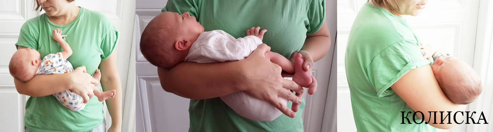
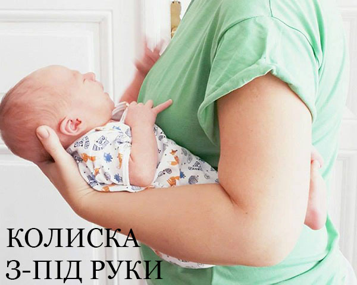
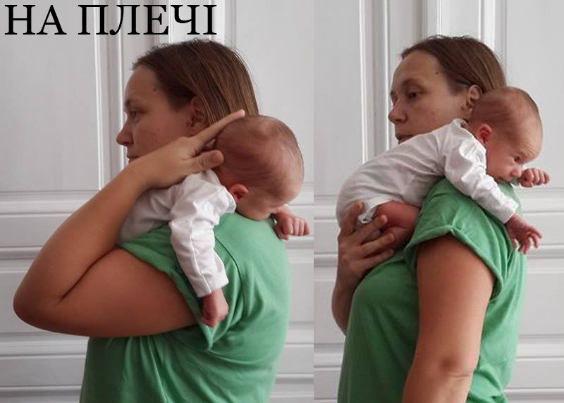
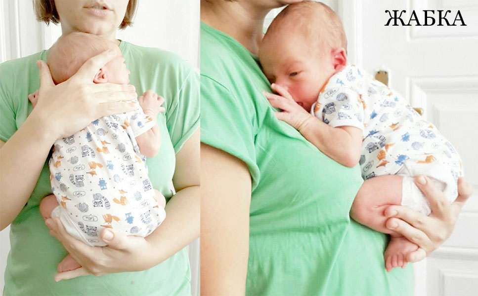
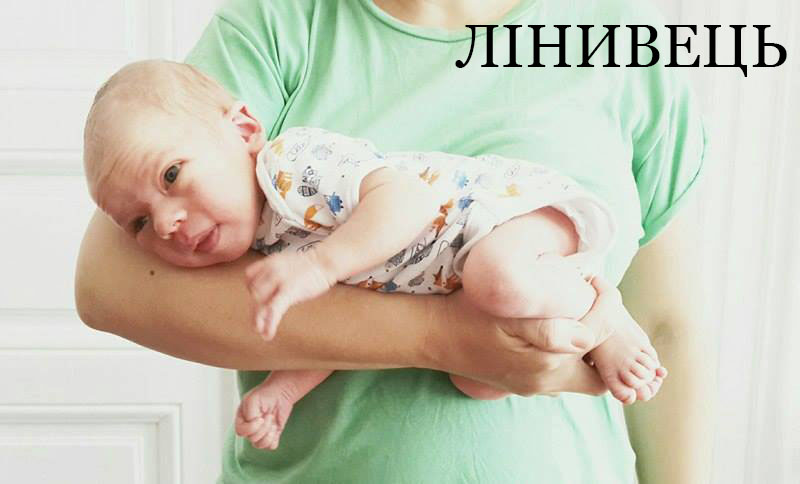
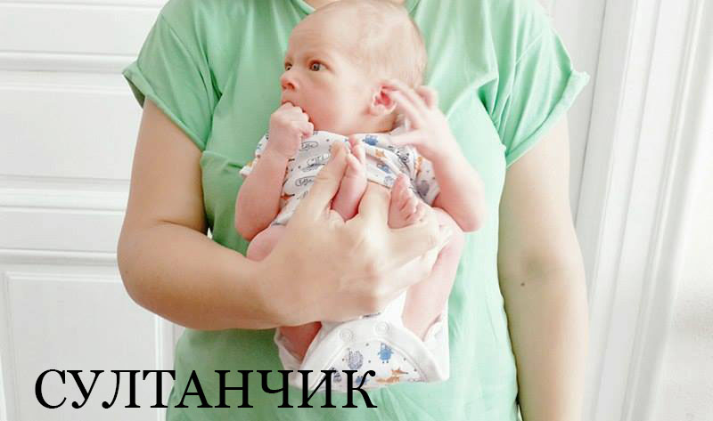
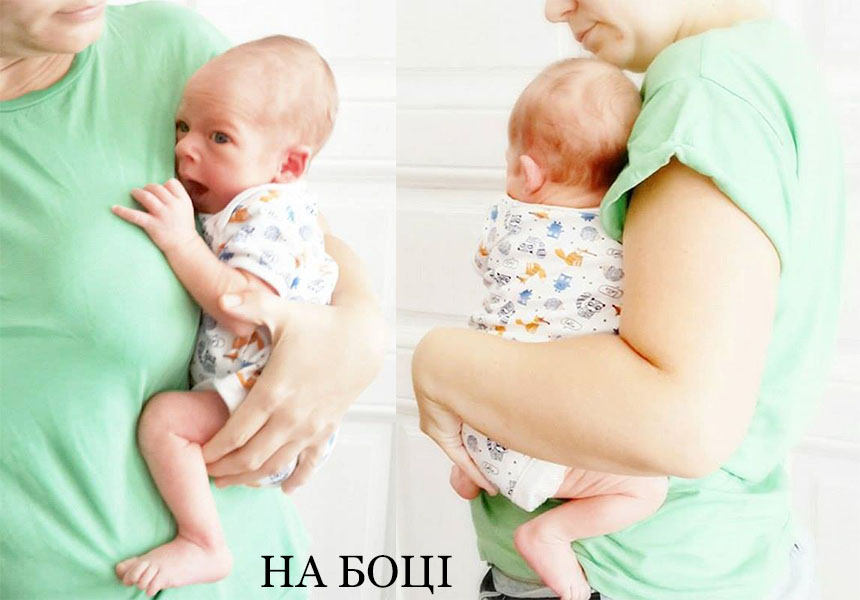

Автор: Наталя Орел
В мережі є безліч статей про те наскільки потрібно носити дітей від народження на руках. Як це корисно для їх психологічного, емоційного і фізичного розвитку. Я ж хочу показати виключно пози для носіння.
КОЛИСКА - дитина лежить на площині руки, попа провисає, коліна ми підтримуєм

КОЛИСКА З-ПІД РУКИ

НА ПЛЕЧІ

ЖАБКА. Де вигляд ЖАБКИ збоку, ноги підтримуєм, фіксуючи М-позицію

ЛІНИВЕЦЬ (пасивний масаж від газиків) - ножки зігнуті тримаємо рукою, або тією, на якій лежить маля, або другою

СУЛТАНЧИК або поза для висаджування, допомагає пропукатись ;)

НА БОЦІ (позиція для старших діток)

Велике дякую за фото і модель для них Любу і Марка
Використання матеріалів лише за згоди авторів